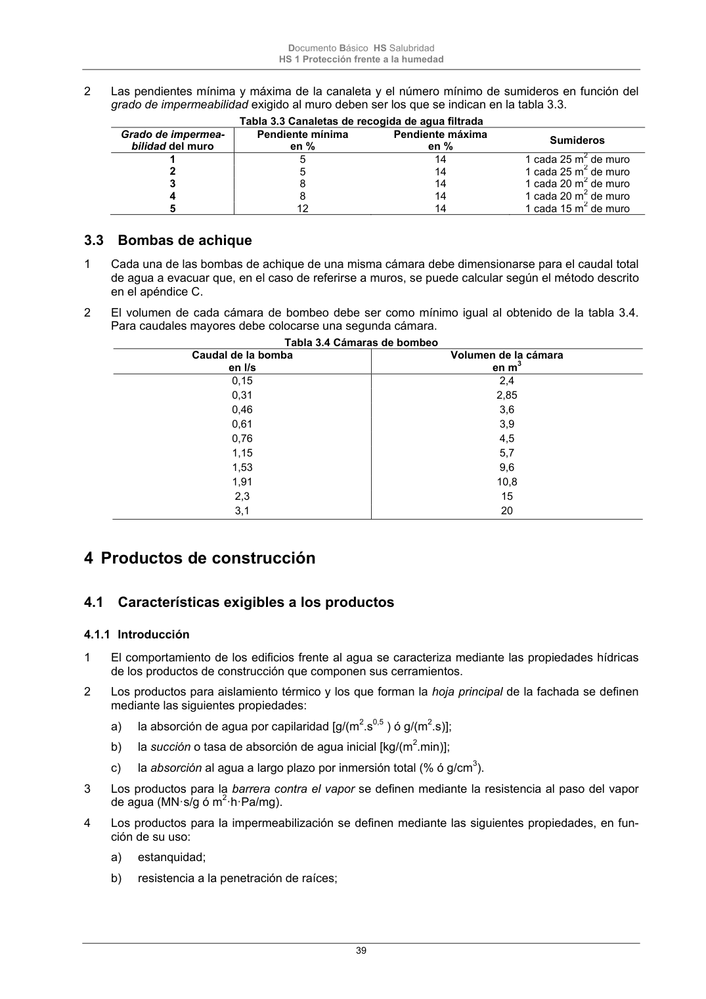
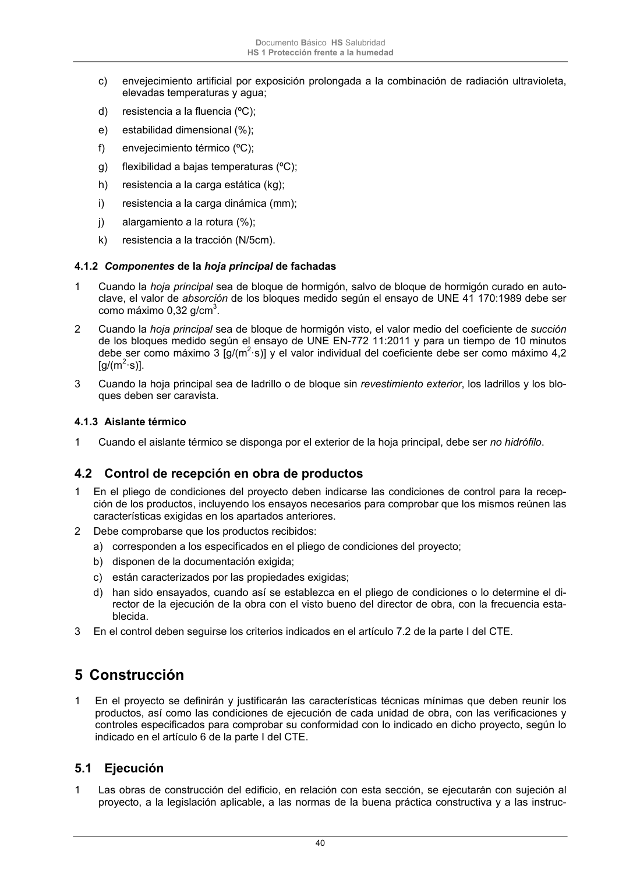

DB-HS Salubridad · edición 2022-06-14 · capa oficial
Documento DB-HS-oficial · SHA-256 del PDF 68df3caacc95f71aee2ec1ba7b2c65ae66155c21e3a8785521b8fdd4fd640d3b
Copia fiel del PDF fuente · Fuente oficial
Ficha de la disposición en la fuente oficial
Formatos: JSON del segmento · Markdown
4.1.1 Introducción 1 El comportamiento de los edificios frente al agua se caracteriza mediante las propiedades hídricas de los productos de construcción que componen sus cerramientos. 2 Los productos para aislamiento térmico y los que forman la hoja principal de la fachada se definen mediante las siguientes propiedades: a) la absorción de agua por capilaridad [g/(m2.s0,5 ) ó g/(m2.s)]; b) la succión o tasa de absorción de agua inicial [kg/(m2.min)]; c) la absorción al agua a largo plazo por inmersión total (% ó g/cm3). 3 Los productos para la barrera contra el vapor se definen mediante la resistencia al paso del vapor de agua (MN·s/g ó m2·h·Pa/mg). 4 Los productos para la impermeabilización se definen mediante las siguientes propiedades, en fun- ción de su uso: a) estanquidad; b) resistencia a la penetración de raíces; Documento Básico HS Salubridad HS 1 Protección frente a la humedad 40 c) envejecimiento artificial por exposición prolongada a la combinación de radiación ultravioleta, elevadas temperaturas y agua; d) resistencia a la fluencia (ºC); e) estabilidad dimensional (%); f) envejecimiento térmico (ºC); g) flexibilidad a bajas temperaturas (ºC); h) resistencia a la carga estática (kg); i) resistencia a la carga dinámica (mm); j) alargamiento a la rotura (%); k) resistencia a la tracción (N/5cm).

